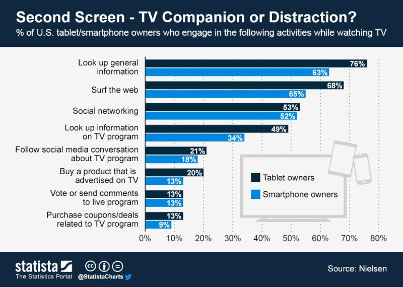
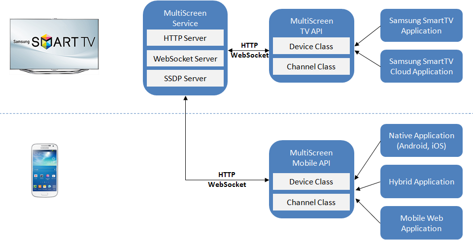

Your browser doesn't support the features required by impress.js, so you are presented with a simplified version of this presentation.
For the best experience please use the latest Chrome, Safari or Firefox browser.
MultiScreen Technologies
Let your mobile talk to your TV!
Second Screen usage stats

*source: http://econintersect.com/b2evolution/blog1.php/2013/06/25/second-screen-tv-companion-or-distraction
Samsung MultiScreen Technologies
- DIAL API
- NService
- MultiScreen API
Samsung MultiScreen Technologies
DIAL API
- Designed by Netflix
- Available on Samsung SmartTVs since 2013 (premium feature)
- Also available on other Smart TV brands
- Local area network device discovery (SSDP from UPnP stack)
- Mobile client can launch TV app using simple HTTP request
- Other actions: app status, installation (if not installed), termination
NService
- Samsung's own API
- Available on Samsung SmartTVs since 2012
- Enables communication between mobile device and Smart TV
- ReST based API (HTTP requests, connection kept alive via longpolling)
- Very robust, handles up to 90 req/s
- Up to 4 devices can be connected simultaneously
MultiScreen API
- Samsung's own API
- Available since 2014
- Features:
- WebSocket connectivity
- Cloud discovery mechanism
- Simple and intuitive JavaScript API, based on node.js's EventEmitter interface
- Native libraries for Android and iOS available
- DIAL API calls available directly from MultiScreen API level
How MultiScreen works
Discover
A mobile application calls the Device API to find a Smart TV it can connect to.
Launch
Once a TV is discovered, user can launch the app in the TV directly from the mobile device.
Connect
Having the app running it the TV, mobile device tries to connect to a Channel opened by the TV application.
Communicate
After successful connecting, devices can communicate using the Channel API.
MultiScreen overall architecture

Code sample: mobile
webapis.multiscreen.Device.search(function(devices) {
devices.forEach(function(device){
console.log(device);
device.getApplication("myApp", function(app){
if (app.lastKnownStatus === "running") {
device.connectToChannel("myChannel",
{"name": "myClientName"},
function(channel){
channel
.on("message", channelOnMessage);
});
}
});
});
});
Code sample: TV
webapis.multiscreen.Device.getCurrent(function(device){
device.openChannel("myChannel", {"name": "TVServer"}, function(channel) {
channel
.on("message", channelOnMessage)
.on("clientConnect", registerClient)
.on("clientDisconnect", deregisterClient);
}
});